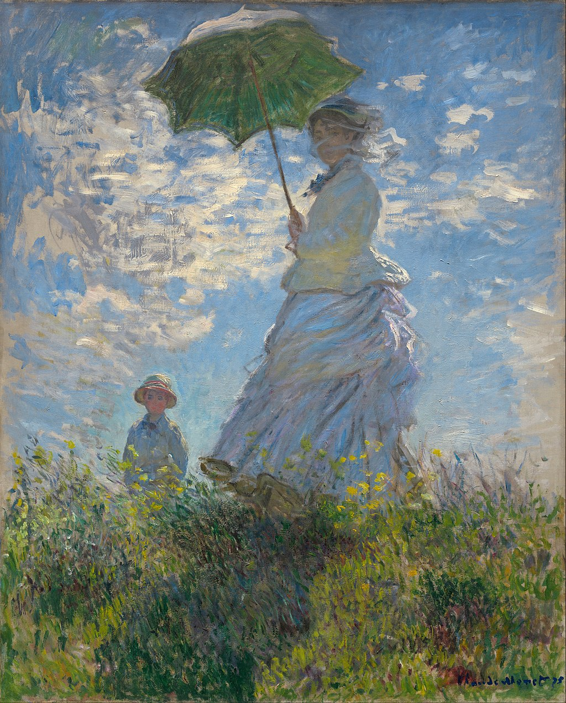

<head>
<meta charset="UTF-8" />
<meta name="keywords" content="drawing, painting" />
<meta name="description" content="drawings by Sunjy" />
<title>Sunjy</title>
<link rel="shortcut icon" type="image/x-icon" href="../../mImages/mCommon/favicon.ico" media="screen" />
<link rel="stylesheet" type="text/css" href="../../mCsses/mCommon/mCssA.css" />
<link rel="stylesheet" type="text/css" href="../../mCsses/mCommon/mCssB.css" />
<link rel="stylesheet" type="text/css" href="../../mCsses/mCommon/mCssC.css" />
<link rel="stylesheet" type="text/css" href="../../mCsses/mCommon/mCssD.css" />
<link rel="stylesheet" type="text/css" href="../../mCsses/mContent/mCssA.css" />
<link rel="stylesheet" type="text/css" href="../../mCsses/mContent/mCssB.css" />
<link rel="stylesheet" type="text/css" href="../../mCsses/mContent/mCssC.css" />
<link rel="stylesheet" type="text/css" href="../../mCsses/mContent/mCssD.css" />
</head>
<script type="text/javascript" src="../../mScripts/mContent/mContentAA.js" /></script>
<script type="text/javascript" src="../../mScripts/mContent/mContentAB.js" /></script>
<script type="text/javascript" src="../../mScripts/mContent/mContentAC.js" /></script>
<script type="text/javascript" src="../../mScripts/mContent/mContentAD.js" /></script>
<script type="text/javascript"></script> 
<script type="text/javascript">
document.write('<div class="mImgAbsolute"></div>');
/*
document.write('<p class="mFontSizeBColor" />From a white paper...</p>');
document.write('<table class="center"><tr><td>');
document.write('');
document.write('</td></tr></table>');
*/
</script>


<script type="text/javascript">
document.write('<p class="mFontSizeBColor" />Woman with a Parasol </p>');
document.write('<p class="mFontSizeSColor" />“Woman with a Parasol – Madame Monet and Her Son” by Claude Monet depicts the artist’s wife Camille Monet and their son Jean Monet during 1875 while they were living in Argenteuil.<br><br>Monet’s brushwork creates splashes of color to capture a moment during a stroll on a windy summer’s day. Madame Monet and her son are viewed from below the horizon line, with an upward perspective, against the white clouds in an azure sky.<br><br>Sunlight shines from behind Camille to whiten the top of her parasol and the flowing cloth at her back, while brightly colored wildflowers surround her front with yellow.<br><br>Camille Monet’s veil is blown by the wind, as is her swirling white dress. The waving grass of the meadow is both in the light and the woman’s shadow, which is echoed by the shaded green underside of her parasol.<br><br>Monets’ seven-year-old son is placed further away, partially concealed behind a rise in the ground and visible only from the waist up, creating a sense of depth.<br><br>The painting from the family’s everyday family scene is not a formal portrait. The work was painted outdoors, en plein air, probably in a single period of a few hours.  <br><br>Contrary to the conventions of academic portraiture, Monet’s Impressionist style presented the features of his subjects as freely as their surroundings.<br><br>The spontaneity of the moment is portrayed by the animated brushstrokes of vibrant color, a style that Monet had perfected.<br><br>The placement and pose of the figures suggest that his wife and son paused only momentarily during their stroll while he captured their likenesses.<br><br>The spontaneity and naturalness of this painting were praised when it first appeared in the second Impressionist Exhibition in April 1876. This painting was one of 18 works he exhibited.<br><br>The painting is one of Monet’s most recognizable and revered masterpieces of impressionism.<br><br>The composition seems to have also pleased Monet as he returned to a similar subject, painting two canvases featuring his second wife’s daughter Suzanne Monet in 1886 with a parasol in a meadow at Giverny.<br><br>Argenteuil<br><br>After the outbreak of the Franco-Prussian War, Monet and his family took refuge in England in September 1870, where he studied the works of John Constable and Joseph Mallord William Turner.<br><br>In 1871, Monet’s works were refused authorization for inclusion in the Royal Academy exhibition in London.<br><br>Soon after, he left London to live in Zaandam in the Netherlands, where he made twenty-five paintings and visited nearby Amsterdam.<br><br>In late 1871, he returned to France, where with Manet’s assistance, Monet found lodging in Argenteuil, a move that initiated one of the most fertile phases of his career.<br><br>From 1871 to 1878, he lived at Argenteuil, a village on the right bank of the Seine river near Paris, and a popular Sunday-outing destination for Parisians, where he painted some of his best-known works.<br><br>During this time, Monet painted various works of modern life. He and Camille lived in poverty for most of this period. <br><br>In 1876, Camille Monet became ill with tuberculosis. Their second son, Michel, was born in 1878. This second child weakened her already fading health.<br><br>In the summer of 1878, the family moved to the village of Vétheuil, where they shared a house with the family of a wealthy patron of the arts.<br><br>Camille Monet was diagnosed with uterine cancer and died in 1879 at the age of thirty-two.<br><br>Camille Doncieux<br><br>Camille Doncieux (1847 – 1879) was the first wife of French painter Claude Monet. She was the subject of several paintings by Monet, as well as Pierre-Auguste Renoir and Édouard Manet. She was the mother of two sons with Monet.<br><br>While in her teens, Doncieux began work as a model. She met Monet, seven years her senior, in 1865 and became his model posing for numerous paintings.<br><br>She became Monet’s mistress, living in poverty at the beginning of his career. Camille and Monet were married in 1870 with painter Gustave Courbet as a witness.<br><br>Camille Monet died in 1879 in Vétheuil, where Monet painted her on her deathbed.<br></p>');
document.write('<table class="center" /><tr><td>');
document.write('<br>Monet’s brushwork creates splashes of color to capture a moment during a stroll on a windy summer’s day. Madame Monet and her son are viewed from below the horizon line, with an upward perspective, against the white clouds in an azure sky.<br><br>Sunlight shines from behind Camille to whiten the top of her parasol and the flowing cloth at her back, while brightly colored wildflowers surround her front with yellow.<br><br>Camille Monet’s veil is blown by the wind, as is her swirling white dress. The waving grass of the meadow is both in the light and the woman’s shadow, which is echoed by the shaded green underside of her parasol.<br><br>Monets’ seven-year-old son is placed further away, partially concealed behind a rise in the ground and visible only from the waist up, creating a sense of depth.<br><br>The painting from the family’s everyday family scene is not a formal portrait. The work was painted outdoors, en plein air, probably in a single period of a few hours.  <br><br>Contrary to the conventions of academic portraiture, Monet’s Impressionist style presented the features of his subjects as freely as their surroundings.<br><br>The spontaneity of the moment is portrayed by the animated brushstrokes of vibrant color, a style that Monet had perfected.<br><br>The placement and pose of the figures suggest that his wife and son paused only momentarily during their stroll while he captured their likenesses.<br><br>The spontaneity and naturalness of this painting were praised when it first appeared in the second Impressionist Exhibition in April 1876. This painting was one of 18 works he exhibited.<br><br>The painting is one of Monet’s most recognizable and revered masterpieces of impressionism.<br><br>The composition seems to have also pleased Monet as he returned to a similar subject, painting two canvases featuring his second wife’s daughter Suzanne Monet in 1886 with a parasol in a meadow at Giverny.<br><br>Argenteuil<br><br>After the outbreak of the Franco-Prussian War, Monet and his family took refuge in England in September 1870, where he studied the works of John Constable and Joseph Mallord William Turner.<br><br>In 1871, Monet’s works were refused authorization for inclusion in the Royal Academy exhibition in London.<br><br>Soon after, he left London to live in Zaandam in the Netherlands, where he made twenty-five paintings and visited nearby Amsterdam.<br><br>In late 1871, he returned to France, where with Manet’s assistance, Monet found lodging in Argenteuil, a move that initiated one of the most fertile phases of his career.<br><br>From 1871 to 1878, he lived at Argenteuil, a village on the right bank of the Seine river near Paris, and a popular Sunday-outing destination for Parisians, where he painted some of his best-known works.<br><br>During this time, Monet painted various works of modern life. He and Camille lived in poverty for most of this period. <br><br>In 1876, Camille Monet became ill with tuberculosis. Their second son, Michel, was born in 1878. This second child weakened her already fading health.<br><br>In the summer of 1878, the family moved to the village of Vétheuil, where they shared a house with the family of a wealthy patron of the arts.<br><br>Camille Monet was diagnosed with uterine cancer and died in 1879 at the age of thirty-two.<br><br>Camille Doncieux<br><br>Camille Doncieux (1847 – 1879) was the first wife of French painter Claude Monet. She was the subject of several paintings by Monet, as well as Pierre-Auguste Renoir and Édouard Manet. She was the mother of two sons with Monet.<br><br>While in her teens, Doncieux began work as a model. She met Monet, seven years her senior, in 1865 and became his model posing for numerous paintings.<br><br>She became Monet’s mistress, living in poverty at the beginning of his career. Camille and Monet were married in 1870 with painter Gustave Courbet as a witness.<br><br>Camille Monet died in 1879 in Vétheuil, where Monet painted her on her deathbed.<br>" />');
document.write('</td></tr></table>');
</script>


